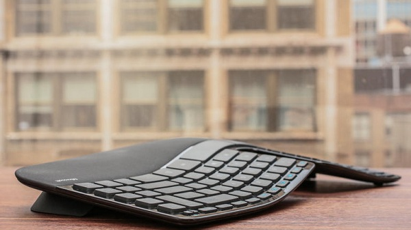
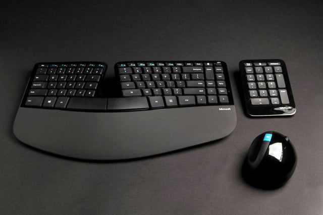

Amazing Ergonomics You Can Include
In Your Workspace
These Gadgets Help Improve Your Posture
1. Upright Go 2

Upright Go 2 is a personal posture corrector that you can use while working. The benefits of Upright Go 2 are as follows: - Prevents backache and muscular pain - Trains muscles to work efficiently and fight fatigue - Strengthen back and core muscles
2. Logitech MX Vertical

Logitech has pretty solidly positioned itself as the best mouse maker, with a variety of devices ranking above the competition. The MX Vertical is another shot at the top, except with an extra emphasis put on ergonomics. How it achieves this is all in the name. The MX Vertical blends verticality, versatility and comfort to create a mouse designed for productivity. But, it has a few quirks that make it trickier to use than a normal mouse and a design that makes it far less portable.
3. Kinesis Freestyle2 Blue

The Freestyle2 Blue for PC is an award-winning split keyboard designed to adjust to your body and typing style. It features a familiar Windows layout plus convenient Multichannel Bluetooth technology for wireless pairing with up to three Bluetooth-enabled devices (e.g., PC, Tablet, or Smartphone).
4. Logitech MX ERGO

Trackballs are extremely precise since their effective travel range in all directions is virtually limitless. The fact that they don't have to be constantly re-positioned also makes them convenient to use. Many ergonomic mice come with built-in trackballs, and Logitech's MX ERGO is the best among them. The mouse comes with a unique adjustable hinge that allows you to adjust its angle for personalized comfort, resulting in up to 20 percent lesser muscular strain. The MX ERGO also lets you control two PCs (even those having different operating systems) and switch between them seamlessly, speeding up your workflow.
5. Microsoft Sculpt Ergonomic Desktop Wireless
The Sculpt Ergonomic Keyboard and Mouse is built on advanced ergonomic design. Sculpt Ergonomic Desktop is built on advanced ergonomic principles, with a split keyboard layout that keeps wrists and forearms in a relaxed position, and a cushioned palm rest to provide wrist support. The domed keyboard shape works to reduce and correct wrist pronation that can cause pain and limited mobility.